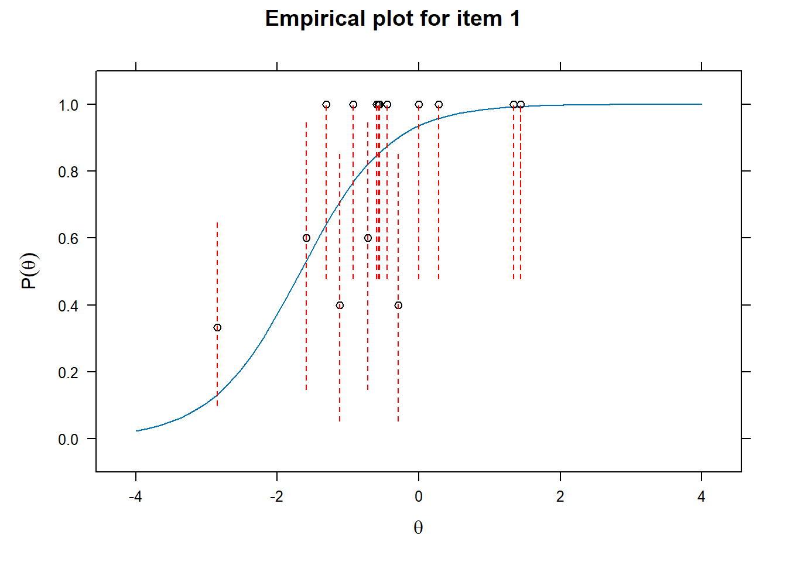
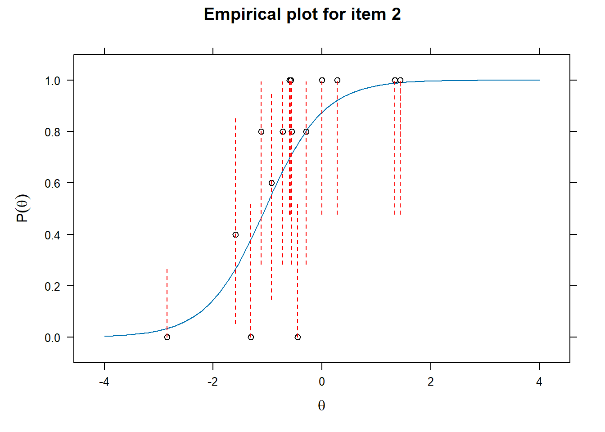
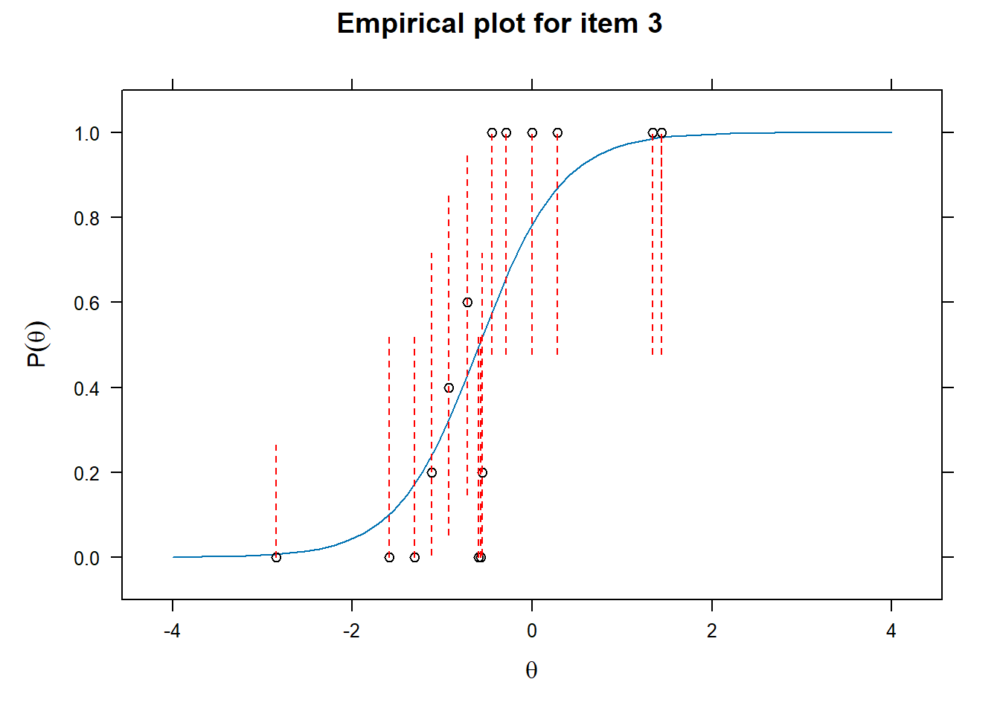
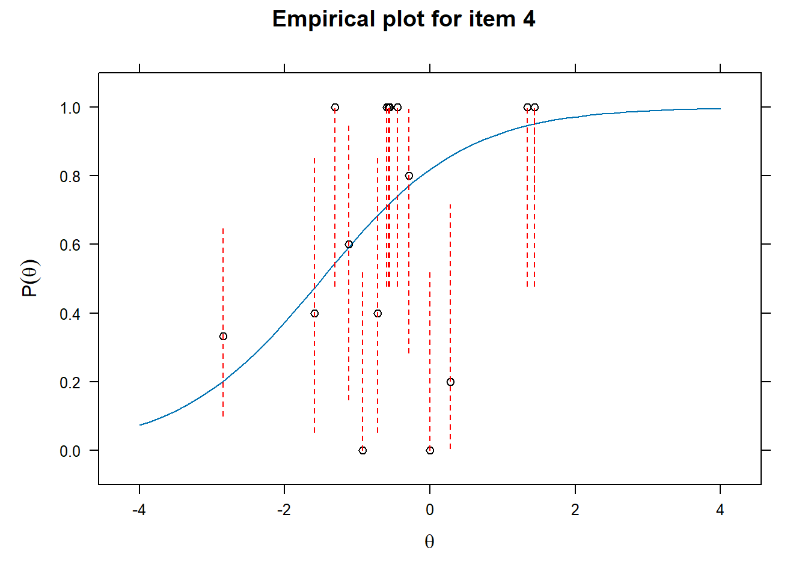
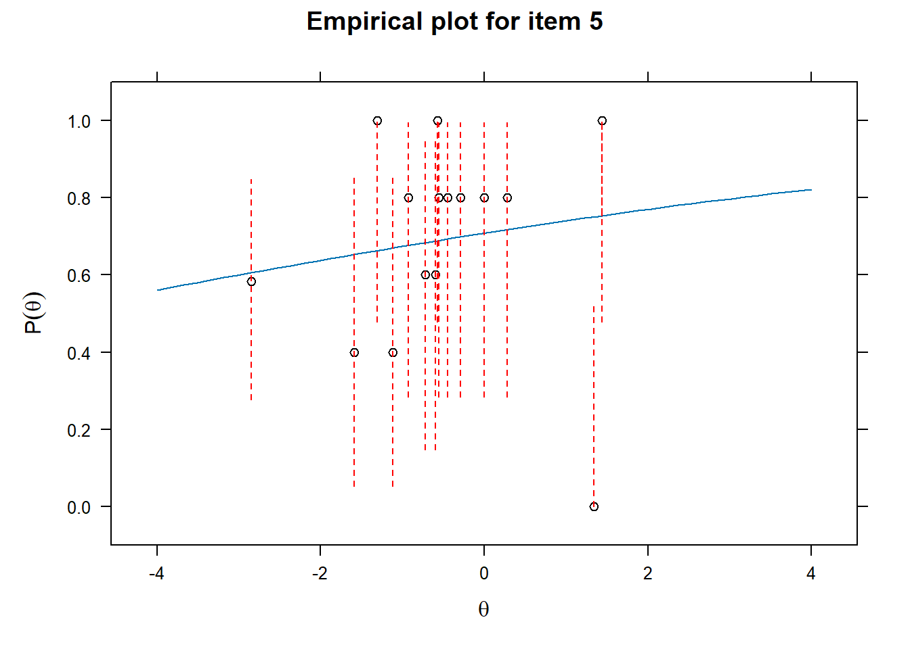
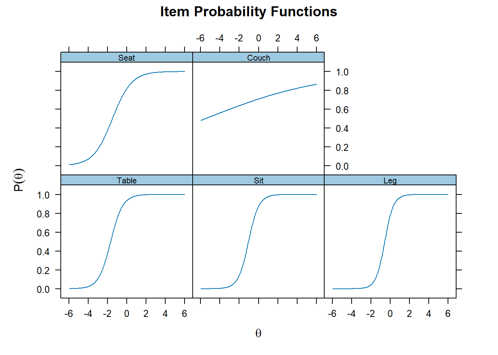
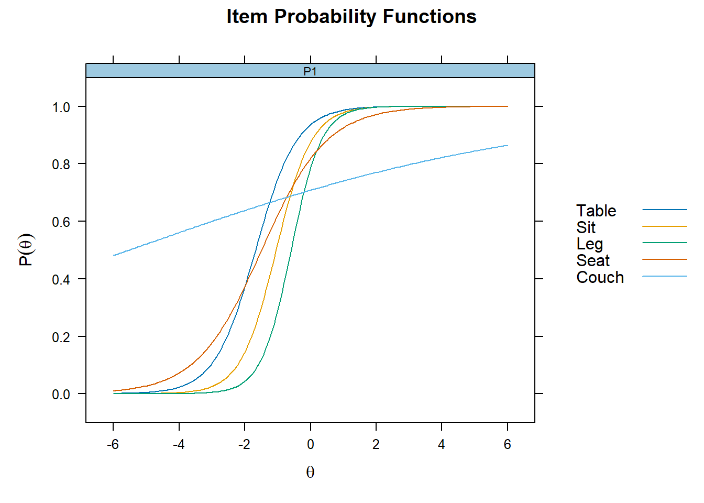
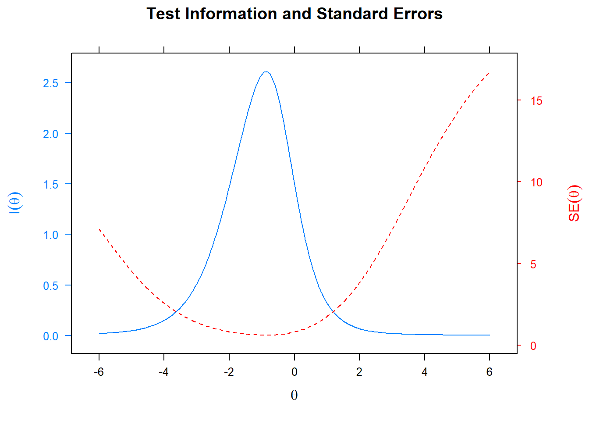

Item Response Theory: 2-Parameter Logistic (2PL) Model
A step-by-step tutorial on conducting 2PL Item Response Theory (IRT) models on memory data in R.
Load Data
We will again use the DRM list of the study of Otgaar et al (2020) as in RASCH model. We will focus on true memory (studied items).
Let’s load the data
# Load data
df <- read_sav("False_Denials_sav_2.sav")
# Create dataframe
df <- as.data.frame(df)2PL Model
We will now conduct a 2 parameter logistic model (2PL). A 2PL model examines: - the difficulty (i.e., how good does your memory latent trait have to be to answer the answer correctly) of the items - and well they discriminate (i.e., how well the item discriminates between people with different latent trait levels of memory).
In other words, it only estimates 2 parameters (2PL).
# Create subset for 1st list
df_irt <- df %>% dplyr::select(Table, Sit, Leg, Seat, Couch)
# First remove first row of NAs
df_irt <- na.omit(df_irt)
# Conduct Rasch model
mod_2pl <- mirt(df_irt,1, itemtype = "2PL", verbose=F, SE=T)
# Results
mod_2pl##
## Call:
## mirt(data = df_irt, model = 1, itemtype = "2PL", SE = T, verbose = F)
##
## Full-information item factor analysis with 1 factor(s).
## Converged within 1e-04 tolerance after 27 EM iterations.
## mirt version: 1.42
## M-step optimizer: BFGS
## EM acceleration: Ramsay
## Number of rectangular quadrature: 61
## Latent density type: Gaussian
##
## Information matrix estimated with method: Oakes
## Second-order test: model is a possible local maximum
## Condition number of information matrix = 35.40356
##
## Log-likelihood = -352.9353
## Estimated parameters: 10
## AIC = 725.8706
## BIC = 755.2871; SABIC = 723.6484
## G2 (21) = 18.59, p = 0.6115
## RMSEA = 0, CFI = NaN, TLI = NaNExamining fit of individual items
- This will provide information on how well the datapoints are distributed along the line.
# Examine item fit
for (i in 1:length(df_irt)){
ItemPlot <- itemfit(mod_2pl,
group.bins = 25,
empirical.plot = i,
empirical.CI = .95,
method = "ML")
print(ItemPlot)
}




Plot the individual items - Difficulty and discriminability
- Difficulty is given by how high theta (latent trait ability/memory performance) needs to be before endorsing the item (remembering the word)
- Discriminability is given by how steep the curve is and thus discriminates between different theta levels.
# Item specific graphs
plot(mod_2pl, type = "trace")
Plot together
plot(mod_2pl,type= "trace", facet_items=F)
Coefficients of difficulty (=b) and discriminability (=a)
- easiness parameter = difficulty/discriminability
# Get item coefficients
# To get the easy parameter change "IRTpars = F"
mirt::coef(mod_2pl, IRTpars = F, simplify = F)## $Table
## a1 d g u
## par 1.602 2.679 0 1
## CI_2.5 0.433 1.570 NA NA
## CI_97.5 2.772 3.789 NA NA
##
## $Sit
## a1 d g u
## par 1.861 1.945 0 1
## CI_2.5 0.494 0.967 NA NA
## CI_97.5 3.229 2.924 NA NA
##
## $Leg
## a1 d g u
## par 2.191 1.290 0 1
## CI_2.5 0.290 0.371 NA NA
## CI_97.5 4.092 2.209 NA NA
##
## $Seat
## a1 d g u
## par 1.013 1.505 0 1
## CI_2.5 0.272 0.944 NA NA
## CI_97.5 1.753 2.067 NA NA
##
## $Couch
## a1 d g u
## par 0.160 0.887 0 1
## CI_2.5 -0.341 0.519 NA NA
## CI_97.5 0.662 1.254 NA NA
##
## $GroupPars
## MEAN_1 COV_11
## par 0 1
## CI_2.5 NA NA
## CI_97.5 NA NAInformation of the test
- Specifically, this provide a plot at which levels of the latent trait ability the test is most informative
- Plotting the standard error also indicates where the standard error is largest for the specific test.
plot(mod_2pl, type= "infoSE")
Factor scores
# Get latent trait scores
df_irt$fscor <- mirt::fscores(mod_2pl)
head(df_irt$fscor)## F1
## [1,] -0.3278053
## [2,] -0.3278053
## [3,] 0.6557888
## [4,] -0.2070695
## [5,] -0.3278053
## [6,] 0.6557888